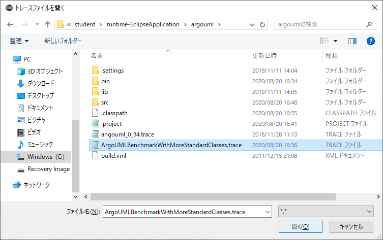

クリックしてトレースファイル (C:\Users\userXX\runtime-EclipseApplication\argouml\ArgoUMLBenchMarkWithMoreStandardClasses.trace) を開いてください.

クリックしてトレースデバッガ用のブレークポイントを作成してください.
トレースデバッガによるデバッグ実行が起動し, ブレークポイントを入れた位置の行が選択された状態で一時停止します.
課題B3では, ArgoUMLの図形の削除機能について見ていきます.
具体的には,
「選択された図形がArgoUMLのシステム内部でどのように管理され, 削除機能の実行によってどのように取り出されて, 削除されるか?」を理解することを目指して, 以下のようにトレースデバッガを操作していきます.
Fig クラスはグラフィックエディタ上の図形を表すGEFの内部のクラスです.
また, FigClass クラスはクラス図上に配置された「クラス」を表す ArgoUML のクラスで, Fig クラスの子孫クラスにあたります.
ブレークポイントを置いた行は、図形を削除するたびに実行されます.
先ほどの実行手順にしたがって進めていくと, 下図のように Fig クラスの removeFromDiagram() メソッド内の743行目で一時停止している状態になっているはずです.
この状態になっていれば, ここから時間計測を開始してください. 時間計測はできる限り，1分以内の単位での計測をお願いします.
ここで, 変数ビューを確認すると, このメソッド実行は FigClass クラスのインスタンス (id = 1675174935) に対する呼び出しだとわかります.
この FigClass クラスのインスタンス (id = 1675174935) がどこから来たのかを確認していきます.
まずは呼び出しスタック上で1つ呼び出し元をクリックしてください.
現在は, 呼び出し元である FigNode クラスの removeFromDiagram() メソッドを見ています.
ここで, 変数ビューを見ると, このメソッドも同一の FigClass クラスのインスタンス (id = 1675174935) に対して呼び出されていることがわかります.
これを確認したら, 呼び出しスタック上でさらに1つ呼び出し元をクリックしてください.
現在は, 呼び出し元である FigNodeModelElement クラスの removeFromDiagramImpl() メソッドを見ています.
ここで, 変数ビューを見ると, このメソッドも先ほどと同様に FigClass クラスのインスタンス (id = 1675174935) に対して呼び出されていることがわかります.
これを確認したら, 呼び出しスタック上でさらに1つ呼び出し元をクリックしてください.
現在は, 呼び出し元である FigNodeModelElement クラスの removeFromDiagram() メソッドを見ています.
ここで, ソースコードを見ると, ローカル変数 delegate が参照しているインスタンスに対して removeFromDiagramImpl() メソッドが呼び出されていることがわかります.
このローカル変数 delegate で参照されるインスタンスはどこから来たのかを確認します.
ソースコードを見ると, 1965行目に delegate への代入文があることがわかるので,
ステップバックオーバーを1回押して, その代入文の実行直前の時点まで戻ってください.
1965行目の delegate への代入文の時点まで戻ったら, ステップインを1回押して getRemoveDelegate() メソッドの中に前から入ってください.
FigNodeModelElement クラスの getRemoveDelegate() メソッドに入りました.
ここで, ソースコードを見ると, このメソッドでは return this で自分自身を戻り値として返していることが確認できます.
これを確認したら, ステップバックリターンを1回押して呼び出し元へと戻ってください.
呼び出し元に戻ると, 先ほどの return this の値が delegate に代入されていることがわかります.
ここで, 再びステップバックリターンを1回押してさらに呼び出し元に戻ってください.
呼び出し元である ActionRemoveFromDiagram クラスの actionPerformed(ActionEvent) メソッドの89行目に戻ってきました.
ここで, 「トレースデバッガ」パースペクティブの右下にある「実行時点の登録」ビューの追加ボタンをクリックしてください.
そうすると, 現在の実行時点がこのビュー上に登録されます.
変数ビュー上にある「呼び出し前」を開くと, 89行目からは, FigClass クラスのインスタンス (id = 1675174935) のメソッドが呼び出されていることがわかります.
この FigClass クラスのインスタンスがどこから来たのかを確認するために, ステップバックオーバーを3回押して, 86行目の拡張for文まで戻ってください.
ここで FigClass クラスのインスタンスは, ローカル変数 figs によって参照されているリストから, 拡張for文によって取得されてきたことがわかります.
ここからは, figs が参照しているリストがどこから来たのかと, そのリストに FigClass クラスのインスタンスがどこで追加されたのかを見ていきます.
まずは, ステップバックインを3回押して, 85行目の getFigs() メソッドの中に後ろから入ってください.
SelectionManager クラスの getFigs() メソッドに後ろから入りました.
ここではステップバックオーバーを1回押してください.
すると, 363行目にある Vector クラスの addElement(Object) メソッドの呼び出し前の時点に来ます.
ここで, 変数ビュー上にある「呼び出し前」を開くと, addElement(Object) メソッドの引数として FigClass クラスのインスタンスが渡されていることがわかります.
また, この時点で「実行時点の登録」ビューの追加ボタンをクリックして実行時点の登録を行ってください.
さらに, この FigClass クラスのインスタンスは, Selection クラスの getContent() メソッドの戻り値として返されています.
getContent() メソッドの戻り値を確認するために, ステップバックインを1回押して, このメソッドの中に後ろから入ってください.
Selection クラスの getContent() メソッドに入りました.
ここで, 変数ビュー上の this を開くと, Selection クラスの子孫クラスである SelectionClass クラスのインスタンスの
フィールド content が FigClass クラスのインスタンス (id = 1675174935) を参照していることがわかります.
先ほどの結果から, FigClass クラスのインスタンス (id = 1675174935) は SelectionClass クラスのインスタンス (id = 1672744985) が参照していることがわかりました.
次は, この SelectionClass クラスのインスタンスがどこから来たのかを見ていきます.
呼び出しスタック上で呼び出し元である SelectionManger クラスの getFigs() メソッドをクリックしてください.
ここで, ソースコードを見ると, SelectionClass クラスのインスタンスは, フィールド selections によって参照されているリストから取得していることが確認でき,
さらに変数ビュー上の this を開くと, SelectionManager クラスのインスタンス (id = 4310438) の selections フィールドによって参照されているのは,
ArrayList のインスタンス (id = 125345735) であることがわかります.
先ほどの結果から, SelectionClass クラスのインスタンス (id = 1672744985) は, SelectionManager クラスのインスタンス (id = 4310438) の
selections フィールドが参照している ArrayList のインスタンスによって管理されていることがわかりました.
次は, この SelectionManager クラスのインスタンスがどこから来たのかを見ていきます.
呼び出しスタック上でさらに呼び出し元である ActionRemoveFromDiagram クラスの actionPerformed(ActionEvent) メソッドをクリックしてください.
ここでは, ステップバックインを1回押して Editor クラスの getSelectionManager() メソッドの中に後ろから入ってください.
Editor クラスの getSelectionManager() メソッドに入りました.
ここで, 変数ビュー上の this を開くと, この Editor クラスのインスタンスのフィールド _selectionManager が
SelectionManager クラスのインスタンス (id = 4310438) を参照していることがわかります.
先ほどの結果から, SelectionManager クラスのインスタンス (id = 431048) は
Editor クラスのインスタンス (id = 371019845) が参照していることがわかりました.
次は, この Editor クラスのインスタンスがどこから来たのかを見ていきます.
呼び出しスタック上で呼び出し元をクリックしてください.
現在は, ActionRemoveFromDiagram クラスの actionPerformed(ActionEvent) メソッドの85行目を見ています.
ここで, ソースコードを見ると, この Editor クラスのインスタンスはローカル変数 ce に代入されている値だとわかります.
ここでは, このローカル変数 ce の値がどこから来たのかを見ていきます.
ステップバックオーバーを2回押して83行目まで戻ってください.
83行目ではローカル変数 ce に Globals クラスの static メソッドである curEditor() メソッドの戻り値が代入されています.
ステップインを1回押してこのメソッドの中に前から入ってください.
Globals クラスの curEditor() メソッドに入りました.
ここで, ソースコードを見ると, Globalsクラスの static フィールド _curEditor が
Editor クラスのインスタンス (id = 371019845) を参照していることがわかります.
先ほどの結果から, Editor クラスのインスタンス (id = 371019845) は Globals クラスの static フィールド _curEditor から取得していることがわかりました.
呼び出しスタック上で呼び出し元をクリックしてください.
ここで, 課題B3は終了です. 時間計測を終了してください.
なお, デバッグ実行は終了せずにそのままの状態にしておいてください.
課題B3の機能理解が終了しましたら, 以下のアンケートにお答えください.
次へ